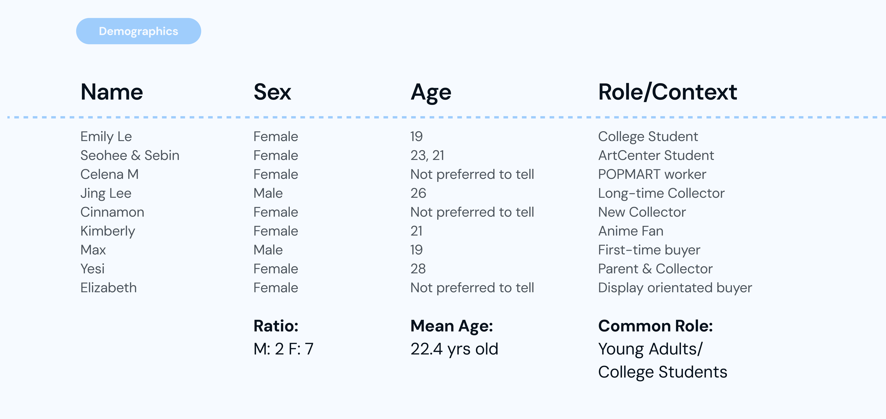
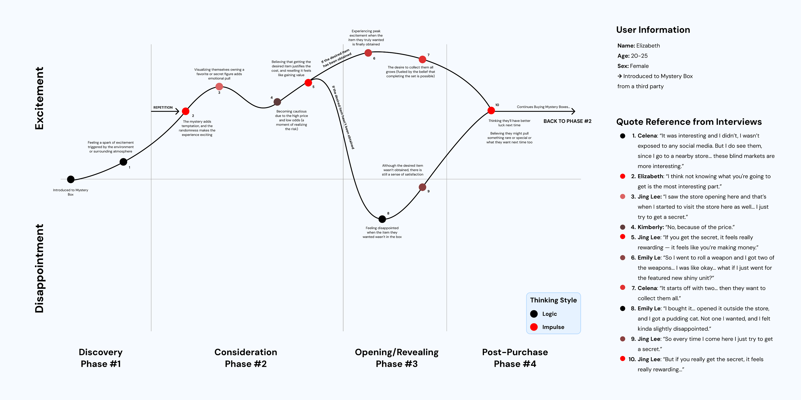
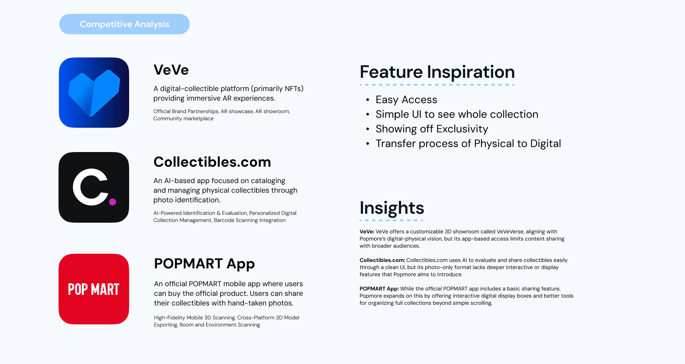
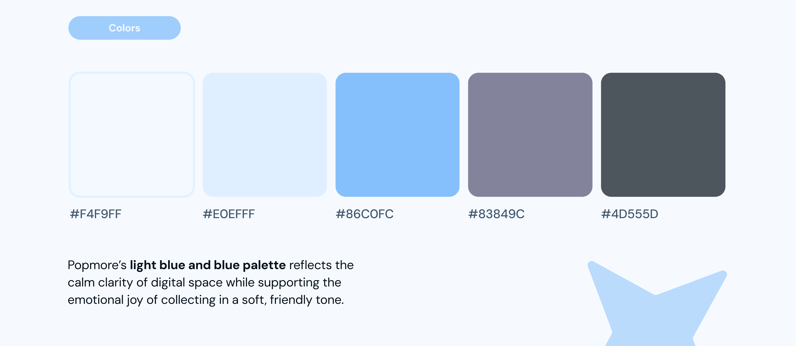
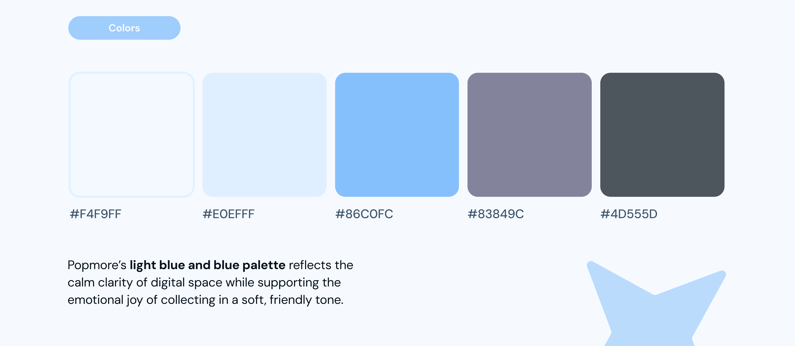
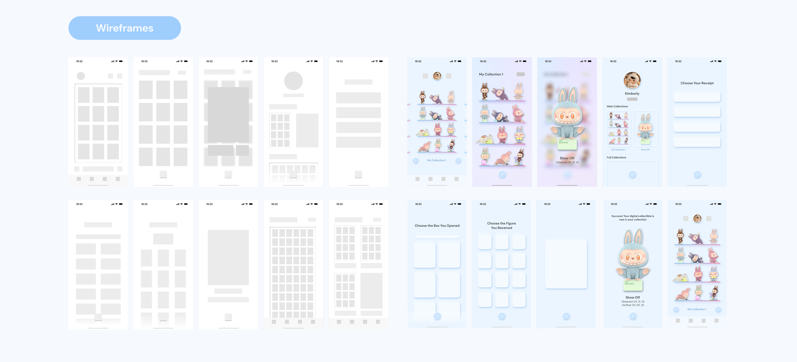

Popmore, App Design
Individual Project
ArtCenter Spring 25, 6 Weeks

Project Description
Popmore is a Collection Companion App that enhances the mystery box experience by giving users a second chance to unbox, track, and display their figures digitally.
Problem Statement
If the experience matters more than the product itself,
How might we reuse the product to let customers relive the experience?
What if the app...
Gives users a Second Digital Box when they purchase a physical box?
Gives users a Choice if the user didn’t love the physical figure, they can choose a new one digitally.
Core Features ↓

-> Users can connect their Pop Mart account to track purchases and unlock a digital box for each figure.

-> Users can conveniently track their collection digitally.

-> Users can unlock special shelves by completing a full collection.

-> Users can display their favorite figure as a home screen widget and customize it.

Introduction
The popularity of mystery boxes has been rapidly increasing, driven by the emotional thrill of surprise and the joy of collecting. At the center of this growing culture is a brand called POPMART and I realized it would be a perfect fit for my project that allows users to bring their physical collectibles into the digital world.
Central Questions
-> How can we enhance the collecting experience?
-> What are the key motivations behind consumers' decisions to purchase mystery boxes?
-> Which specific features or psychological factors make mystery boxes appealing to consumers?
To advance my knowledge on my research objectives, I conducted secondary research using scholarly sources.
Field Research ↓

To better Understand...
Interviewed with 9 unique participants to explore the behavioral aspects of mystery box consumption.
Analysis ↓
Built a UX Journey Map to visualize the overall user experience of mystery boxes.

Conducted a KJ Method using quotes and observation statements from the interviews. (Collaborated with Brice Pierce, Jackson Pettus, David Ko)
Research Findings
Some users value the experience of unboxing more than the physical item itself. For them, the anticipation, surprise, and emotional high of revealing what’s inside holds greater significance than the product they receive.
Competitive Analysis ↓

Design Systems ↓
 

Low, Mid-Fidelity Wireframes ↓
If I had more time...
-> Reconsider about making a separate app. Could it be a new feature inside a POPMART app?
-> How can I accurately track the physical boxes and convert them into a digital collection?